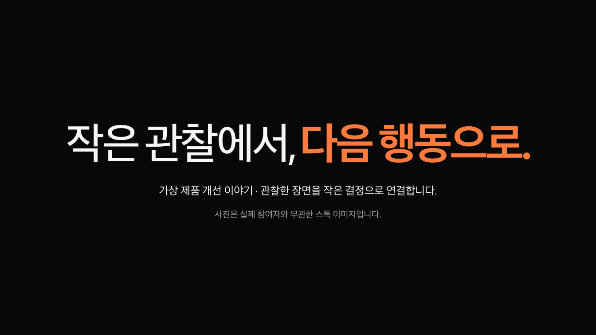
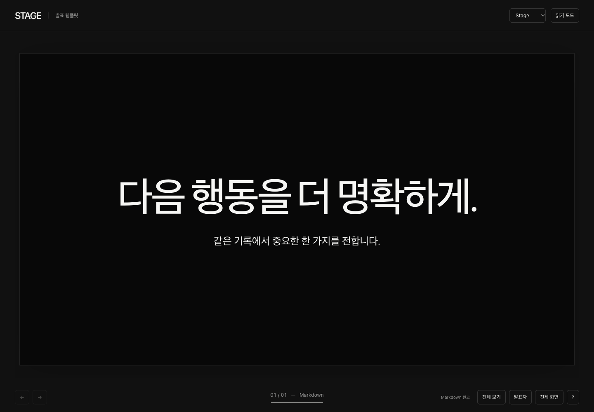

원고는 간단하게.
무대는 풍부하게.
큰 문장과 넓은 사진, 서로 다른 크기의 그리드, 필요한 곳의 색을 되찾았습니다. 본문은 Markdown에 한 번만 쓰고, 발표와 읽기 자료를 함께 만듭니다.
두 이야기, 열여섯 장의 리듬

작은 관찰에서, 다음 행동으로.
실제 발표에서 보기 ↗같은 원고로, 달라진 기본 조판
아래 두 비교에는 배치 설정을 추가하지 않았습니다.


비교 원고·본문 해시는 동일합니다. 위의 두 발표는 이야기와 원고도 다시 구성한 별도 예제입니다. 동일 원고 기록 · 실제 검증과 범위
본문 한 번, 필요한 선택만.
일반 제목·문단·목록·사진·인용의 형태를 보고 기본 구도를 고릅니다. 복잡한 편집형 그리드는 H2로 자료를 묶고, 색·대표 그룹·사진 초점만 짧게 선택합니다.
이 두 예제의 16장 중 11장은 배치 이름을 쓰지 않았습니다. 색과 사진 크롭 설정은 별도이며, 읽기 화면에는 같은 원고의 전체 내용과 순서를 남깁니다.
제품 Markdown 원고 · 워크숍 Markdown 원고<!-- stage-slide compose: editorial --> # 기록을, 결정할 수 있는 모양으로. <!-- stage-group tone: blue --> ## 남겨 둔 관찰 **24** 개 장면을 다시 찾기 위한 기록입니다.